A process for bringing AI into a district responsibly: what to build, in what order, and the toolkits and resources that support each step. Built from work with district leaders, task forces, and professional learning teams.
AI is already in classrooms, offices, and homes. The question for a district is no longer whether to respond but how to build the capacity to respond well.
Students and staff are using AI at near universal rates, often without shared expectations. Bans have given way to guidance in most places, and higher education now expects students to arrive with AI literacy and explicit citation habits. At the same time, state and federal rules keep shifting, and vendors keep adding AI to tools districts already own.
There is a finite window to shape how AI enters education so that it is guided by human values like equity and inclusion, not only by the market. Across many district engagements, the same lessons keep showing up.
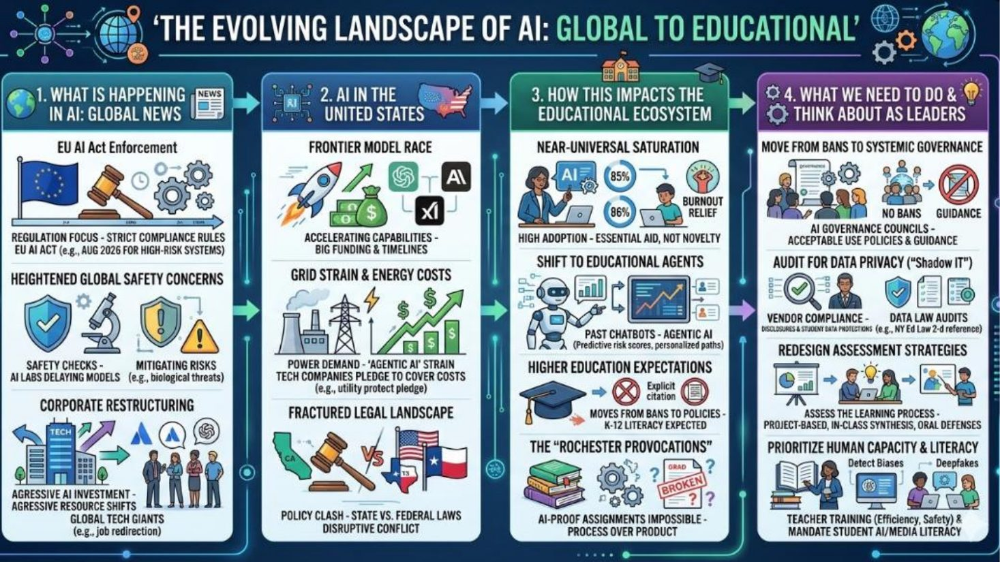
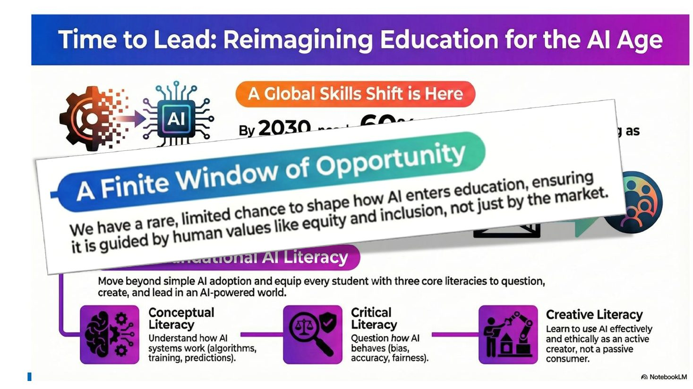
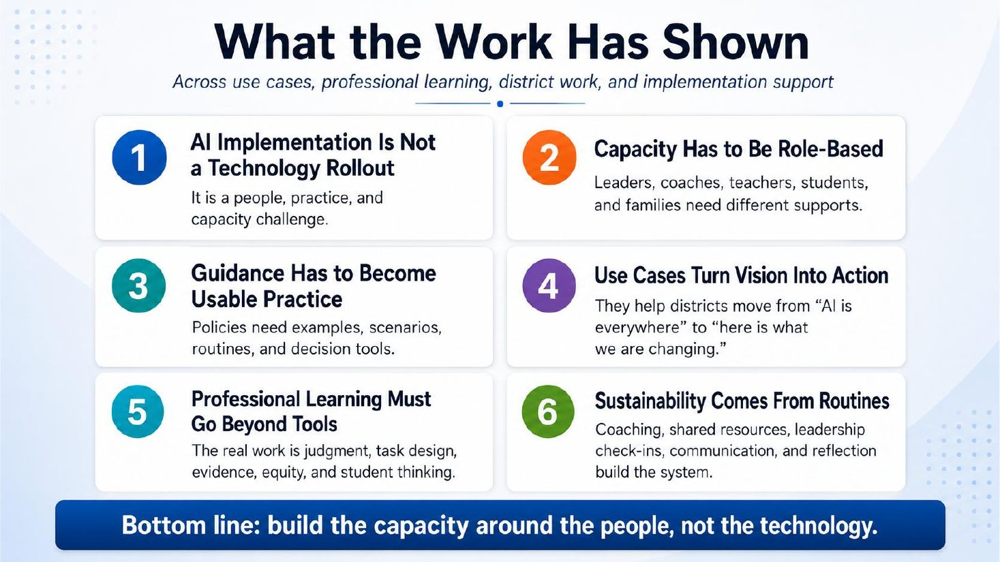
Many districts stop at a board policy. Policy sets the foundation; governance keeps it accountable and current; guidance makes it usable in daily practice. All three are needed.
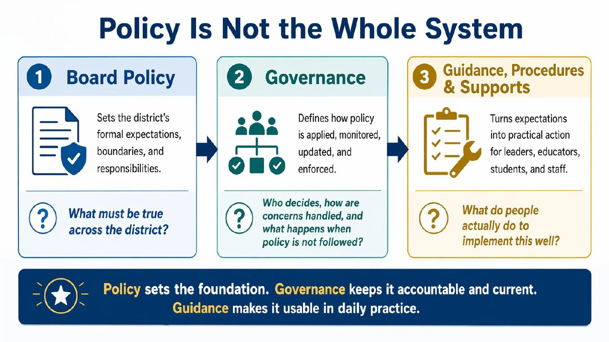
Sets the district's formal expectations, boundaries, and responsibilities.
What must be true across the district?
Defines how policy is applied, monitored, updated, and enforced.
Who decides, how are concerns handled, and what happens when policy is not followed?
Turns expectations into practical action for leaders, educators, students, and staff.
What do people actually do to implement this well?
Strands are the areas of work that must develop in parallel. Phases show how that work matures over time. Together they let a district move with coherence while recognizing that different strands move at different speeds.
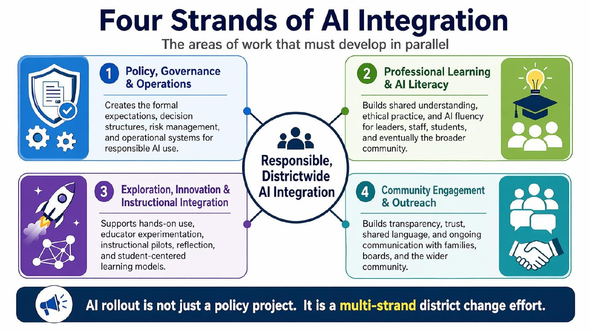
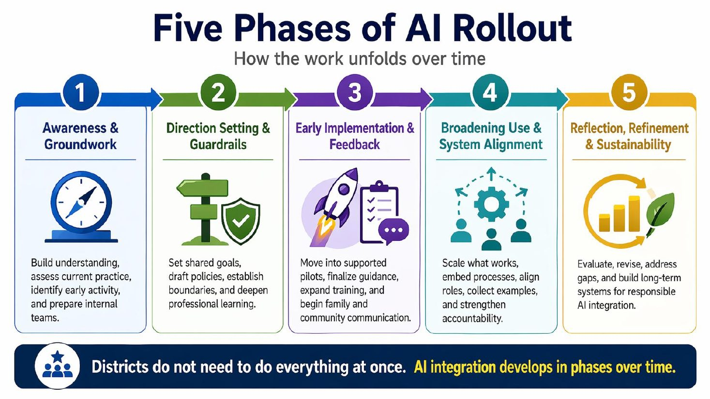
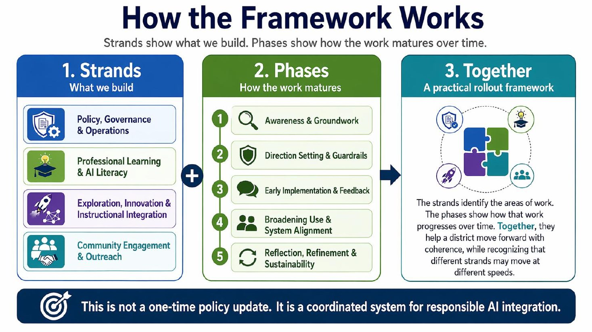
Formal expectations, decision structures, risk management, and operational systems for responsible AI use.
Shared understanding, ethical practice, and AI fluency. Starts with leaders and educators, then expands outward.
Hands-on use. Educators first, then pilots with students, with cycles of reflection.
Transparency, trust, and shared language with families, boards, and the wider community.
| Strand | Phase 1Awareness and Groundwork | Phase 2Direction Setting and Guardrails | Phase 3Early Implementation and Feedback | Phase 4Broadening Use and System Alignment | Phase 5Reflection, Refinement and Sustainability |
|---|---|---|---|---|---|
| Policy, Governance and Operations | Initiate readiness audits, define working groups, begin AUP and policy review, clarify legal and ethical guidance | Draft new or revised policies (AUP, academic integrity, AI use), begin legal and board input, start scenario planning | Finalize and approve policies; publish guidance documents with examples and scenarios | Embed into district processes (tool vetting, risk review, onboarding); begin monitoring and revision cycles | Refine based on use data and feedback; revisit risk assessments and ethical guardrails |
| Professional Learning and AI Literacy | Launch awareness PD for leaders and educators; build shared language; introduce ethical use | Provide deeper PD; design tiered supports by role; introduce early student AI literacy goals | Scale role-specific PD; students begin early AI literacy work in class; expand ethics focus | Integrate AI literacy into curriculum and digital citizenship; offer self-paced PD; deepen student and family understanding | Evaluate growth and gaps; build long-term AI fluency goals for all roles; support a learning culture |
| Exploration, Innovation and Instructional Integration | Identify existing use cases and early adopters; form an exploratory working group; no formal pilots yet | Educators explore AI in their professional workflow; small-group planning for instructional pilots begins | Run pilot projects with reflection; support collaborative planning and review of outcomes | Expand AI-integrated practices across content areas and grade levels; collect models and exemplars | Institutionalize effective practices; build coaching and support networks; share externally |
| Community Engagement and Outreach | Minimal external communication; identify key parent and stakeholder groups and concerns | Draft key messaging and FAQs; prepare communications based on district values and direction | Launch communications to families and the public about goals, practices, and protections; offer intro sessions for parents | Build a proactive communication rhythm; highlight student and educator work; strengthen parent partnership | Continue family and community engagement; gather feedback; build transparency into ongoing AI evolution |
Source: the strands and phases planning document developed with a large urban district in New York, also included in the AI Task Force Toolkit.
Districts do not need to do everything at once. Open a phase to see what to do, who is involved, and which toolkits support the work. Phases 1 through 3 are where most districts spend their first year.
Superintendent or designee, task force chair, instructional technology lead.
Task force, curriculum and instruction, IT and data privacy, legal counsel, board policy committee.
Instructional technology facilitators, building leaders, professional learning team, communications.
Curriculum leaders, coaches, instructional technology, communications.
Cabinet, task force, data and assessment, professional learning.
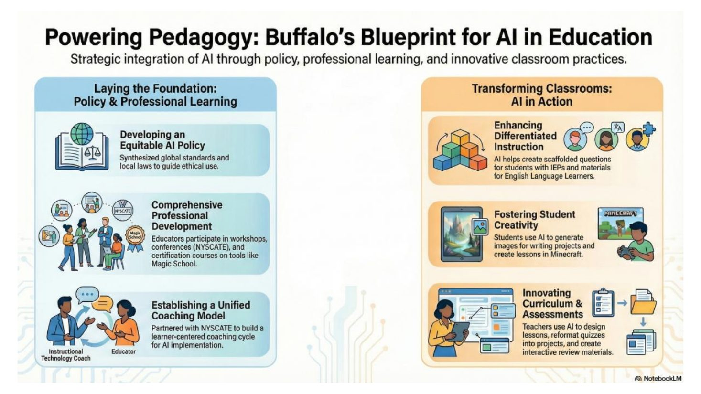
Within the Policy and Guidance strand, the task force organizes its work into four areas. Each has a "where we are now" check, resources to help, and a planned next steps table the team fills in.
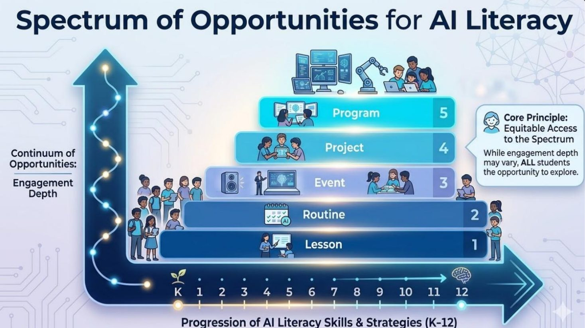
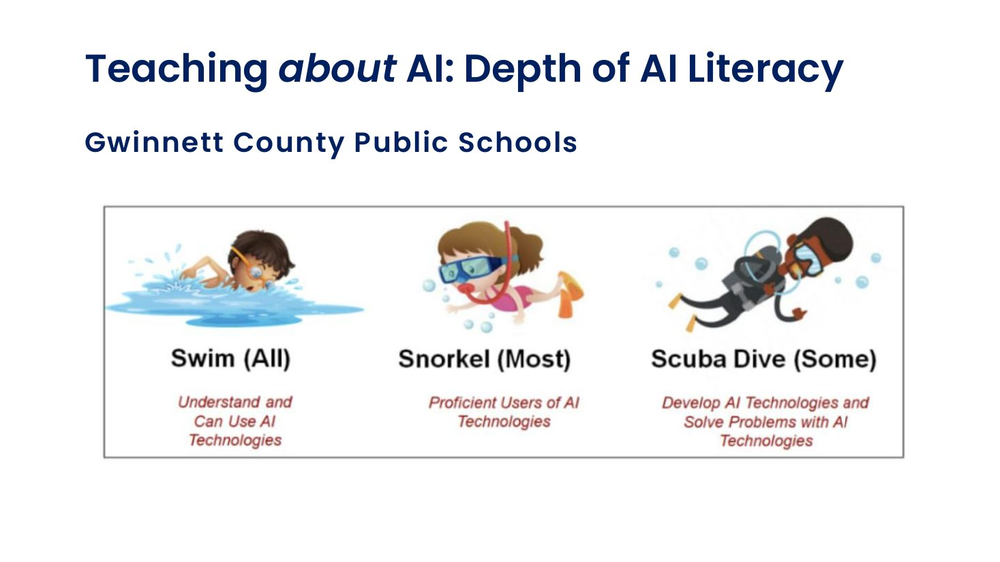
All four areas live in the AI Task Force Toolkit, which a district copies and localizes.
The same process looks different depending on where you sit. Pick the entry point that matches your seat.
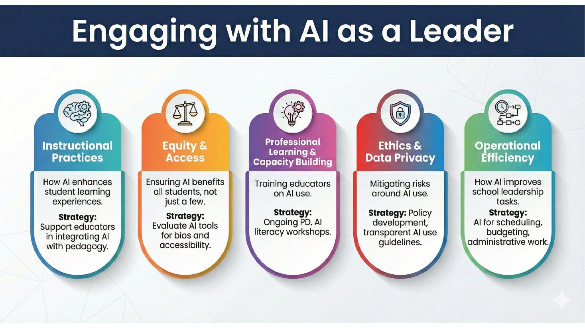
Five places to engage: instructional practices, equity and access, professional learning and capacity, ethics and data privacy, operational efficiency. Your job is the governance layer and the system view across all four strands.
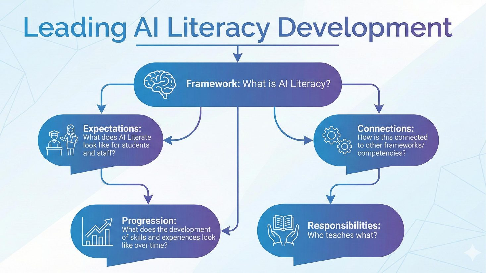
Lead AI literacy development: define the framework, expectations by role, connections to other frameworks, progression over time, and who teaches what. Draft and review the guidance, tool vetting, and scenarios.
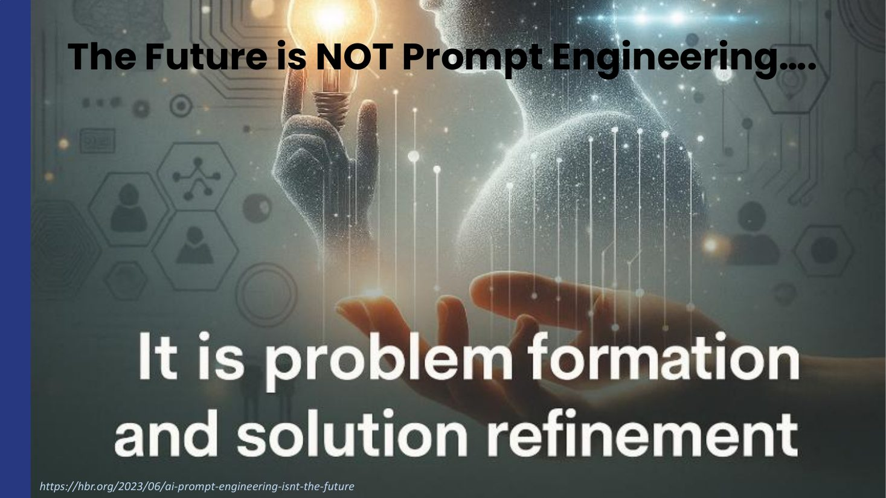
Move staff beyond prompt tips toward problem formation and solution refinement. Use the formats matrix and the educator continuum to design tiered, role-based learning.
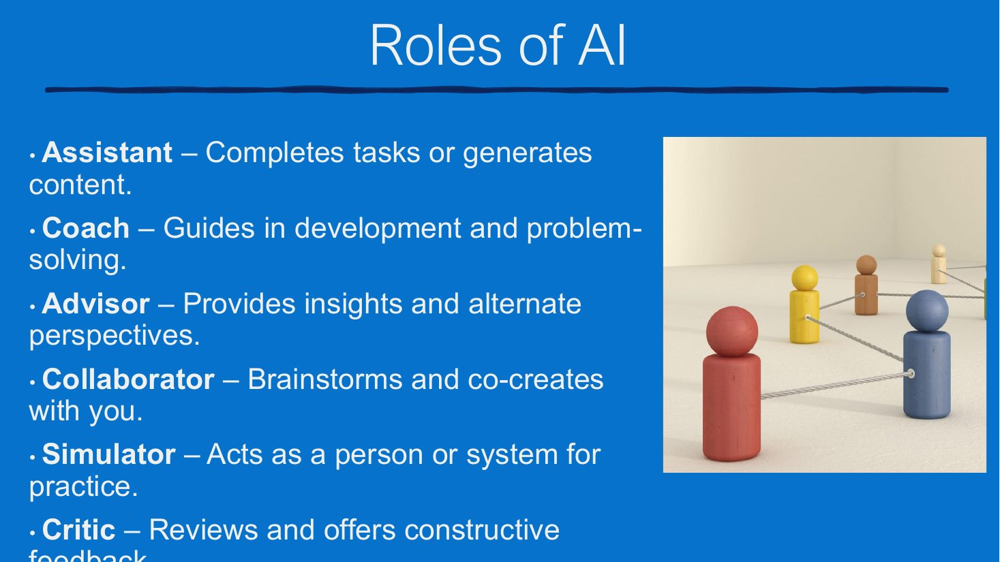
Support the teacher. Help educators choose the role AI plays (assistant, coach, advisor, collaborator, simulator, critic) and redesign tasks so student thinking stays central.
Field examples of what other systems have tried, grouped by area. Nearly all are back office and adult facing: the business of running the system. Three commitments show up in every one.
AI reveals what is in the data; people verify, investigate, and decide.
Every workload enters through an intake path and is measured from the start.
The work runs where the system, not a vendor, holds the data.
Twelve Metro Vancouver districts serving nearly three quarters of the province's students built a standing AI network. Published wins include real-time family registration and communication across languages and staff-found payroll improvements.
Superintendents attended personally rather than delegating. Deliberately few supported platforms ("when you support everything, you support nothing"). Shared principles, locally led practice.
Leadership-level attention and governance before scale. A district does not need to invent this structure; a regional service agency or consortium usually already has it.
Manual warranty tracking, named as cumbersome by a district's own service teams.
Runs entirely on data the technology office already owns, small in scope, through a governed intake path, measured from the start.
A modest, universal burden and a low-risk rehearsal of the repeatable process (intake, build, measure, decide) any larger workload will need.
AI-generated routing scenarios and vehicle to student matching. Denver modeled the impact of ten school closures. A neighboring district recovered more than 17,000 hours of learning time in one year through on-time arrival.
AI produced and scored the scenario space; transportation professionals set parameters and made every call. Co-developed with a vendor rather than bought off the shelf.
Frame it as recovered learning time, not technology. The first question is discovery: where does the routing data live today, and who controls it?
One institution cut dining food waste roughly 40 percent; another applied the same tracking to a 53 million dollar in-house operation.
Instrument the operation first: continuous waste tracking built the dataset, AI turned it into forecasting, and food service professionals kept all planning authority.
Higher education numbers do not transfer; the pattern does. Projections stay illustrative until the district's own data speaks.
A pilot migration of a mainframe application was completed and met its success criteria, with AI accelerating the work.
A bounded application, chosen deliberately. Success criteria defined before work began; engineering owned every decision.
AI-assisted rewrites are fast to build and hard to maintain without a governed platform and a named owner per workload. The discipline, as much as the technology, made the result credible.
District buyers draft and refine RFP criteria and scopes in minutes instead of hours. A cooperative serving roughly 1,300 districts trained a model on its own solicitation corpus.
Human in the loop by design: AI drafts, buyers keep full editorial control and final language. Grounding in institutional documents is what made outputs usable.
A document-foundation task before it is an AI task, with counsel in the loop throughout. Procurement usually sits outside IT, so plan it as a two-office conversation.
Compliance processes carrying heavy unstructured documentation, produced and managed manually; correspondence on the order of 30,000 items handled by hand.
Governed retrieval and drafting over documents the organization owns outright, on infrastructure already in the building, measured from day one.
The strongest first proving workload: no student records, honest metrics fast, and a full rehearsal of the repeatable process. Set the expectation of workflow proof with real but modest numbers.
Building a planning assistant forced consolidation of fragmented policies into one accessible location, a benefit realized before launch.
The grounding requirement did the work: to give an AI only vetted documents, the documents first had to be found, reconciled, and organized.
The preparation an AI workload demands is itself data governance progress. Scope the consolidation into the first workload and the project doubles as records management.
AI agents for staff workflows and family communication; AI-supported triage kept service to families whole through a staffing disruption.
Built inside the division's own tenant: a sovereignty decision reached independently, then relied on when operations were strained.
Where it ran is the transferable choice. Name early that any family-facing communication needs a translation-quality review process.
Code completion and refactoring for developers; ticket volume, time-to-close, and bottleneck analysis with AI-aided queue management; troubleshooting keyed to error codes; AI-enabled security alert triage.
Entirely on the technology organization's own code, tickets, and logs, for internal users, with well-established reference implementations.
Highest readiness in the landscape. Queue analysis is service-improvement analytics, about tickets and never about people. The people who would run every future workload build skills here first.
Districts and individual staff increasingly build their own small AI-assisted applications: schedule helpers, form processors, dashboards, created in days rather than procured in months.
Fast to build and easy to abandon: typically no security review, no data agreement, no inventory entry, and no owner of record once the builder changes roles.
Not whether staff build tools, but through what path. Security review, hosting, and inventory are roles a technology office already holds; the intake-and-inventory pattern below is the ready-made answer.
Applied AI to provincial assessment results to surface performance trends for school leadership teams.
Accuracy required careful data segmentation, learned iteratively. Vendor privacy limits pushed the work into a controlled server environment.
Trustworthy analysis needs data organized for the question, and the controlled environment this system reached by necessity is the posture a district should assume by design.
Reading intervention insight for teachers from aggregate screener patterns, with individual student profiles avoided by design.
Co-developed by curriculum, technology, and reading specialists working only on aggregate patterns; instructional expertise owned the design.
Rich data in and aggregate insight out can coexist, with every action a professional's. Instructional specialists led; one system's related answer was a dedicated data analyst role.
A model built from public, aggregate school characteristics flags schools exceeding expectations year over year: candidates for investigation, not validated exemplars. No public ranking, no prescribed action.
Expectation-versus-actual framing, aggregate inputs only. The design answers who decided, and from what data, before anyone asks.
Candidates for investigation is the design, not a caveat: the model finds where to look; educators determine what is happening there.
Two capabilities on one governed foundation: a walled-garden coach grounded only in vetted intervention documentation, offering ideas to consider rather than answers to obey; and guided inquiry, where a leader states what they want to understand and the tool recommends an approach and returns results with visualizations.
The credibility reference is StretchAI, launched by ISTE+ASCD in June 2026 after three years of development: walled garden, trained only on vetted research-based publications, role aware.
The opening question is diagnostic on its own: where does knowledge about interventions live across the district today? In most systems it is scattered, and discovering that is itself a data readiness finding.
A department-built generative AI tool in its own environment: trialed in 16 schools, expanded to 50, rolled out to roughly 100,000 staff after surveys showed workload savings; students later, separately safeguarded.
Two disciplines: sovereign hosting from day one (data under departmental control, training no outside models), and expansion gated on evidence at every step, staff before students.
Evidence for the governed platform, not a case for another chatbot. The staircase scales down as well as up: own staff first, then a small cohort, then everyone, gated on evidence.
Purpose-built staff agents paired with a full governance build: executive committee, data advisor and champion networks, formal AI guidelines, a data governance charter.
Their stated thesis: an AI strategy and a data governance strategy must grow together.
Governance built alongside the first workloads makes every answer to every community a matter of record rather than reassurance.
A disciplined enterprise pilot of AI productivity tools with pre, mid, and post measurement.
Evidence, not enthusiasm, drove the adoption and change management decisions.
Set criteria together before work begins and measure against the district's own goals. Modest first numbers, honestly reported, are what make the next team join.
Every workload enters through a governed path: a live inventory of what is running, on what data, with what access, and who owns it.
Intake, reference architecture, deployment, and measurement as one repeatable path rather than case by case exceptions.
A durable answer to the questions boards and auditors ask of every public system, and a ready home for the micro-app question. The inventory is part of the work, not overhead on it.
The most compelling public stories need the most preparation, and the readiest areas tell the quietest stories.
Documents and technology operations: one or two proving workloads on the district's own documents and tickets; the repeatable workflow built and measured in house.
Operations, finance, and procurement: the visible back-office work, where a small group of interested offices can scope data access together.
Analysis and decision support, with knowledge navigation throughout: the district's own data question answered responsibly, on a proven workflow and a governed foundation, with people deciding.
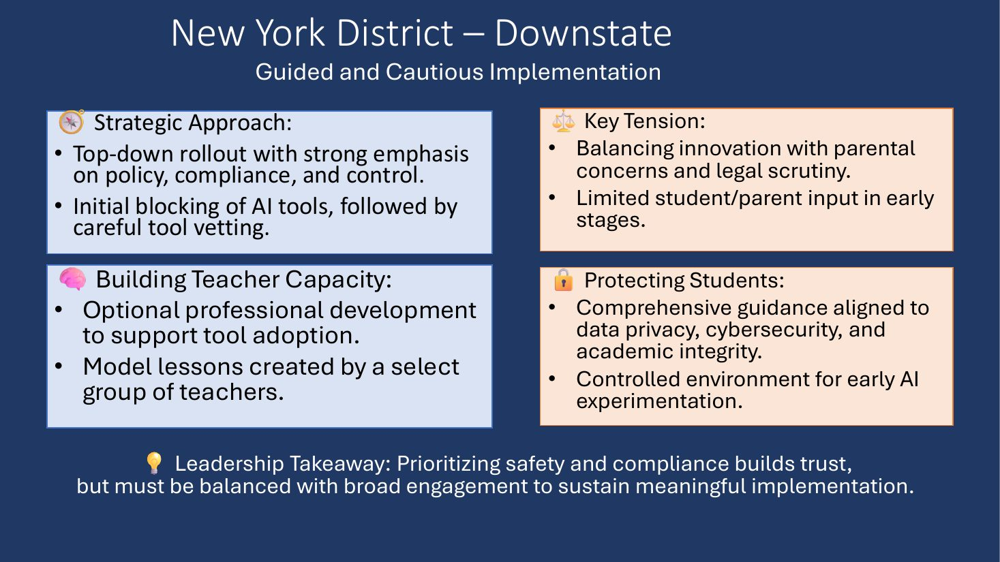
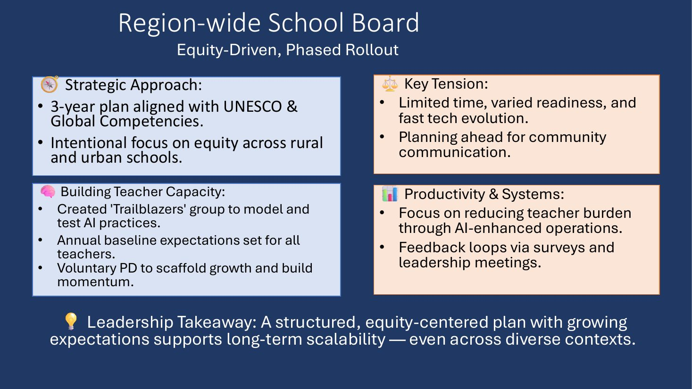
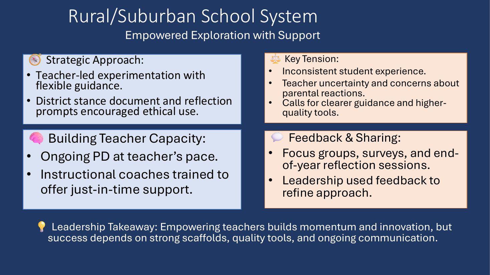
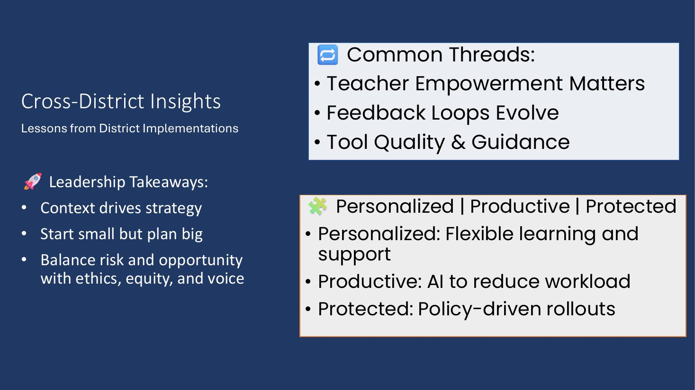
Sources: a 2025 AI readiness review at a large urban district; the C21 Canada AI Use Case Initiative (published cases, 2024 to 2026); publicly reported implementations at the named organizations; field observations compiled August 2026. Shared as observations of what others have tried, not prescriptions.
Scenarios are how a task force tests its draft guidance and how staff learn to make consistent decisions in gray areas. The toolkit includes six core scenarios, each with a recommended response and a "better next time," plus 21 broader themes for discussion.
Read all scenarios in the Task Force Toolkit · TeachAI ethics flashcards · Activities to support responsible use of AI
Everything linked above plus the hands-on tools and external references, in one filterable list.
Roll-out framework, guidance, tool vetting, professional learning, scenarios.
Used to develop professional learning with consistency across a district.
Michigan Virtual, written for any district.
Human centered AI guidance and the swim, snorkel, scuba depth model.